建党百年网
首页
大会盛况
优秀党员
党章党规
相关电影
<
>
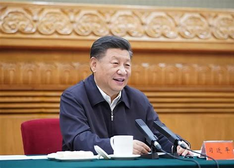
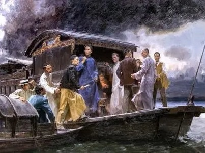
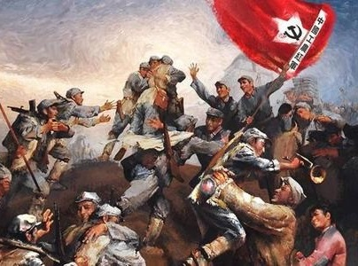
建立过程
早期组织
正式成立
名称由来
陈独秀曾称“吾党”为“社会党”,后来才改称为“共产党”
指导思想
发展阶段
政策宣示
组织机构
中央机构
领导体制
中国共产党
党章
｜
党徽
｜
党旗
｜
誓词
｜
党的性质
｜
党的宗旨
｜
指导思想
｜
行动指南
｜
主要矛盾
｜
主要成就
｜
基本经济制度
｜
党的组织原则
｜
党的基层组织建设
｜
党纪的作用
｜
党的主要纪律
｜
党风的内涵和作用
｜
共产党员的基本义务
｜
入党手续
｜
端正入党动机
百年征程波澜壮阔 百年初心历久弥坚
1921 中共一大
1926 北伐战争
1929 古田会议
1931 九一八事变
1934 红军长征
1935 遵义会议
1936 西安事变
1937 抗日战争
1945 日本投降
1946 全面内战
1949 新中国成立
1964 四个现代化
1971 重返联合国
1978 三中全会
1992 南方谈话
1997 香港回归
隐藏
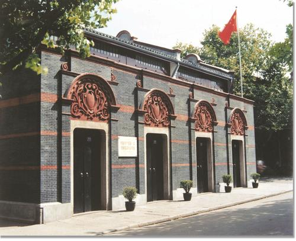
1921年
中共一大
中国共产党第一次全国代表大会于1921年7月23日至8月初在上海法租界望志路106号和浙江嘉兴召开。
上海的李达、李汉俊,武汉的董必武、陈潭秋,长沙的毛泽东、何叔衡,广州的陈公博,济南的王尽美、邓恩铭,旅日的周佛海,以及由陈独秀指定的代表包惠僧出席会议,代表全国50多名党员。
1926年
北伐
战争
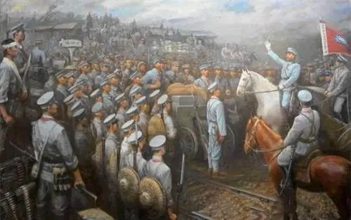
1926年7月，国民革命军誓师北伐。北伐战争的直接打击目标是帝国主义支持的北洋军阀，主要有吴佩孚、孙传芳、张作霖三支势力，他们直接掌握的军队有70万人，而国民政府所辖的国民革命军只有10万人左右。
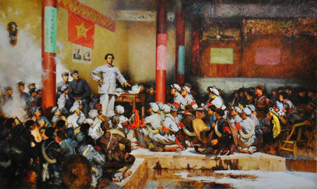
1929年
古田会议
1929年12月，红四军党的第九次代表大会在福建省上杭县古田召开。会议选举产生了新的中共红四军前敌委员会,毛泽东当选为书记。
大会通过毛泽东起草的古田会议决议,其中最重要的是关于纠正党内的错误思想的决议案,确立了思想建党、政治建军的原则。
1931年
九一八事变
1931年9月18日深夜，根据不平等条约驻扎在中国东北的日本关东军，向中国军队驻地北大营和沈阳城发动进攻。这就是九一八事变。第二天，日军占领沈阳。 至1932年2月，辽宁、吉林、黑龙江三省沦为日本的占领地。
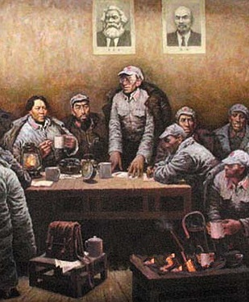
1935年
遵义会议
1935年1月15至17日，中共中央政治局在遵义召开扩大会议。在这次会议上，改组了中央领导机构，增选毛泽东为中共中央政治局常务委员。
后来，又成立了由毛泽东、周恩来、王稼祥组成的新的“三人团”，负责指挥全军的军事行动。
1934年
中央红军开始长征
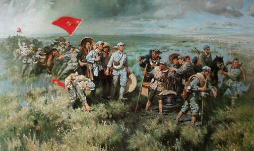
1934年9月上旬，国民党军队加紧对中央革命根据地腹地发动进攻，红军已无在原地扭转战局的可能。10月，中共中央、中革军委率中央红军主力8.6万多人，踏上战略转移的漫漫征程，开始了世界历史上前所未有的壮举。
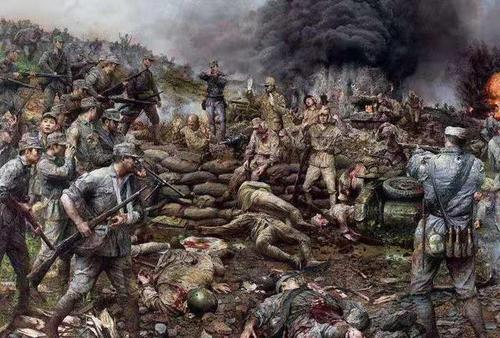
1937年
抗日战争
1937年7月7日夜,日本侵略军悍然发动卢沟桥事变,当地中国驻军奋起抵抗,全民族抗战由此爆发。
卢沟桥事变发生的第二天,中共中央向全国发出通电:“平津危急!华北危急!中华民族危急!只有全民族实行抗战,才是我们的出路!”一场决定中华民族命运的殊死大搏斗拉开帷幕。
1936年
西安事变
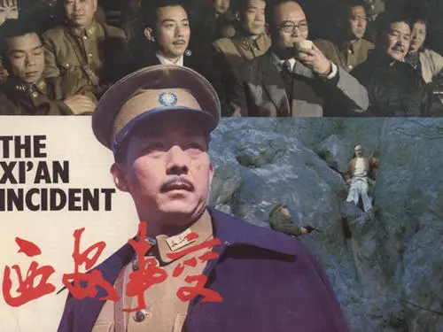
1936年12月4日，蒋介石亲赴西安，逼迫张学良、杨虎城率部“剿共”。 张学良、杨虎城在向蒋介石要求抗日遭拒后，于12月12日凌晨，采取了“兵谏”，扣留了蒋介石，并通电全国，提出停止内战、一致抗日等八项主张。这就是震惊中外的西安事变。
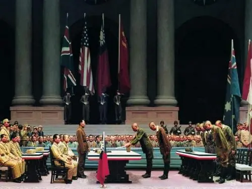
1945年
日本投降
1945年8月15日，日本天皇裕仁以广播形式发布《终战诏书》。日本无条件投降。9月2日，日本代表在投降书上签字。侵华日军128万人向中国投降。
10月25日，被日本占领50年之久的台湾以及彭湖列岛，重归中国主权管辖之下。这成为抗日战争取得完全胜利的重要标志。
1946年
全面
内战
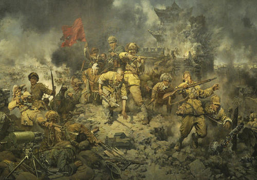
1946年6月26日，国民党军队在完成内战准备后，以22万人悍然进攻鄂豫边境的中原解放区。其后，国民党军向其他解放区展开大规模进攻。全面内战由此爆发。 从1946年6月至1947年6月，人民军队处于战略防御阶段，战争主要在解放区内进行。
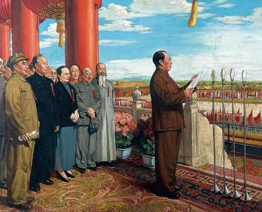
1949年
新中国成立
1949年9月，中国人民政治协商会议第一届全体会议在北平隆重召开。
参加政协的有中国共产党、各民主党派、无党派人士、各人民团体、人民解放军、各地区、各民族以及海外华侨的代表。会议通过《中国人民政治协商会议组织法》，选出政协第一届全国委员会。
1964年
四个现代化
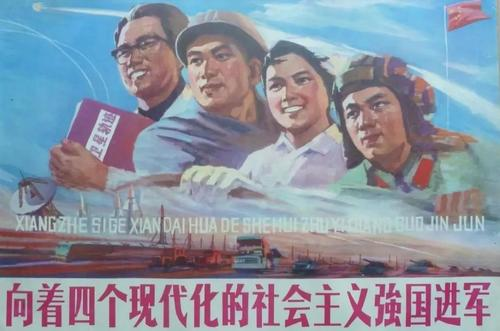
1964年底，周恩来在三届全国人大一次会议上郑重提出实现“四个现代化”的历史任务，即“在不太长的历史时期内，把我国建设成为一个具有现代农业、现代工业、现代国防和现代科学技术的社会主义强国，赶上和超过世界先进水平”。
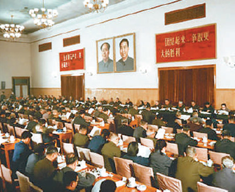
1978年
十一届三中全会
1978年12月18日至22日，党的十一届三中全会在北京召开。
全会冲破长期“左”的错误的严重束缚，彻底否定“两个凡是”的错误方针，高度评价关于真理标准问题的讨论，重新确立了党的实事求是的思想路线。
1971年
重返
联合国
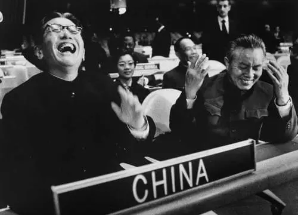
1971年10月25日，第二十六届联合国大会以压倒多数票通过2758号决议。
会议后恢复中华人民共和国在联合国的一切合法权利，并立即把台湾国民党当局的代表从联合国的一切机构中驱逐出去。
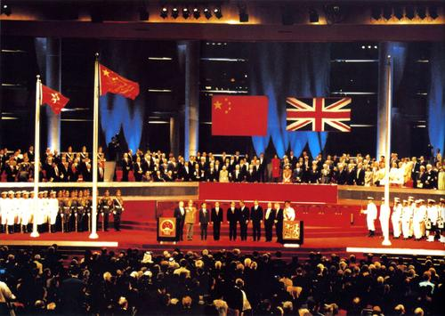
1997年
香港回归
1997年6月30日午夜，香港会议展览中心灯火通明，举世瞩目的中英两国政府香港政权交接仪式在这里举行。
7月1日零时，乐队奏响中华人民共和国国歌，中华人民共和国国旗和中华人民共和国香港特别行政区区旗冉冉升起。
1992年
南方谈话
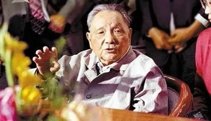
在党和国家历史发展的紧要关头，1992年1月18日至2月21日，88岁高龄的邓小平先后到武昌、深圳、珠海、上海等地视察。
他一路走，一路看，发表了一系列重要谈话。南方谈话，使邓小平一生的光辉业绩达到新的高度。